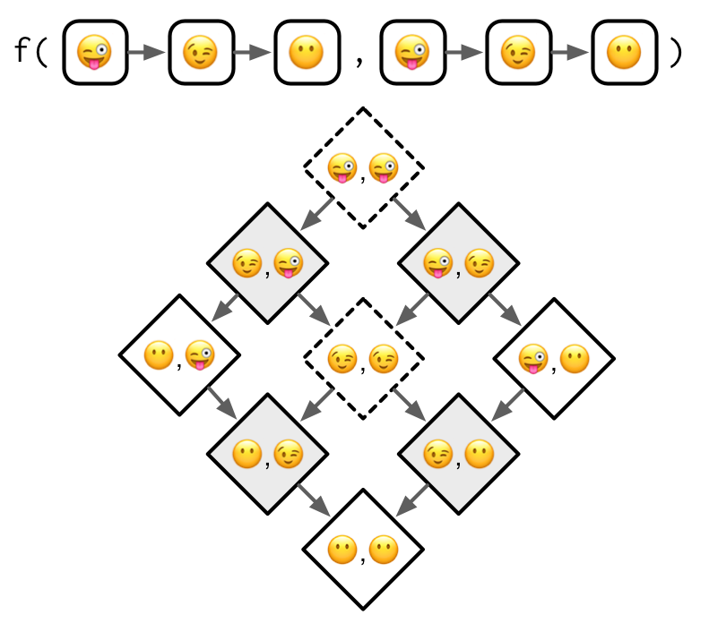

library(methods)15 S4
Introduction
S4 是一种更规范的基于泛型函数的面向对象系统。其底层思想与S3类似，但是有更严格的函数去创建类、泛型函数、方法——setClass()，setGeneric()，setMethod()。此外，S4 OOP 提供更多的继承和方法派发。
S4 与S3 相比，还多了一个新的内容——slot（槽），使用特殊操作符@提取。
Outline
- 15.2节：简要概述 S4 的主要组成部分：类、泛型函数和方法
- 15.3节：深入 S4 “类”的细节，包括原型、构造函数、辅助函数和验证函数。
- 15.4节：介绍如何创建新的 S4 “泛型函数”，以及如何为这些泛型函数提供方法；介绍访问器函数——旨在允许用户安全地检查和修改对象槽。
- 15.5节：深入 S4 中“方法多分派”的全部细节。
- 15.6节：讨论 S4 和 S3 之间的相互作用，及如何一起使用它们。
Learning more
与前几章类似，我们只关注S4 OOP如何工作，如何高效的使用它不在次范围内。在实践中，你需要额外注意：
- 没有一本书可以回答你所有关于S4的问题。
- R的内置文档有时会与社区最佳实践发生冲突。
在实践中，你需要仔细阅读文档，不断提问，多次实验。
Prerequisites
所有S4 OOP相关的函数都由“methods”包提供。虽然该包总是会在终端交互时加载，但当使用Rscritp时则不会，所以当我们使用S4 OOP时，最好加载它。
Basics
setClass()
setClass()可以定义一个类——类名和槽。在数据槽中可以规定数据类型和名字。
setClass(
"Person",
slots = c(
name = "character",
age = "numeric"
)
)类定义完毕后，可以使用new()函数实例化一个对象。
john <- new("Person", name = "John Smith", age = NA_real_)使用is()函数检查对象的类名；使用@或slot()函数获取对象中的槽值。
is(john)
#> [1] "Person"
john@name
#> [1] "John Smith"
slot(john, "age")
#> [1] NAsetGeneric()
setGeneric()可以定义一个泛型函数。我们可以创建一个提取年龄信息的泛型函数。
setGeneric("age", function(x) standardGeneric("age"))
#> [1] "age"
setGeneric("age<-", function(x, value) standardGeneric("age<-"))
#> [1] "age<-"setMethod()
setMethod()可以定义一个方法。我们根据上面的泛型方法，定义属于Person类的age方法。
setMethod("age", "Person", function(x) x@age)
setMethod("age<-", "Person", function(x, value) {
x@age <- value
x
})
age(john) <- 18
age(john)
#> [1] 18假设Person类属于某个R包，你可以使用class?Person来获取该类的帮助文档。在方法调用前添加?，如?age(john)，可以获取方法的帮助文档。
最后，你可以使用“sloop”包中的函数检查类和泛型函数。
sloop::otype(john)
#> [1] "S4"
sloop::ftype(age)
#> [1] "S4" "generic"Classes
定义S4类时，通常要设定setClass()中的三个参数：
- class name：类名，通常类名使用
UpperCamelCase。 - slots：一个有name属性的字符串向量，描述了槽的名字和数据类型。
ANY可以表示任意类型数据。 - prototype：一个有name属性的列表，记录了每个槽中的默认值。
setClass(
"Person",
slots = c(
name = "character",
age = "numeric"
),
prototype = c(
name = NA_character_,
age = NA_real_
)
)
me <- new("Person", name = "James")
str(me)
#> Formal class 'Person' [package ".GlobalEnv"] with 2 slots
#> ..@ name: chr "James"
#> ..@ age : num(0)
#> ..$ names: chr [1:2] "name" "age"Inheritance
setClass()中的contains参数可以指定一个类，表示当前类继承自该类。例如，我们可以创建一个Employee类，继承自Person类，添加额外槽boss。
setClass(
"Employee",
contains = "Person",
slots = c(
boss = "Person"
),
prototype = list(
boss = new("Person")
)
)
str(new("Employee"))
#> Formal class 'Employee' [package ".GlobalEnv"] with 3 slots
#> ..@ boss:Formal class 'Person' [package ".GlobalEnv"] with 2 slots
#> .. .. ..@ name: chr(0)
#> .. .. ..@ age : num(0)
#> .. .. ..$ names: chr [1:2] "name" "age"
#> ..@ name: chr(0)
#> ..@ age : num(0)SetClass()还有9个其他参数，但这些参数要么已被弃用，要么不推荐使用。
Introspection
is()可以查看对象所属的类及其继承类。
is(new("Person"))
#> [1] "Person"
is(new("Employee"))
#> [1] "Employee" "Person"此外，还可以用作判断函数。
is(john, "Person")
#> [1] TRUERedefinition
因为类与对象的定义都是环境中的一个变量，所以在实例化一个类的对象后，依然可以重新定义这个类，此时要注意已经实例化的对象可能无效。
setClass("A", slots = c(x = "numeric"))
a <- new("A", x = 10)
setClass("A", slots = c(a_different_slot = "numeric"))
a
#> An object of class "A"
#> Slot "a_different_slot":
#> Error in slot(object, what): no slot of name "a_different_slot" for this object of class "A"Helper
new()函数是一种非常原始的实例化函数，很适合开发者；但对于使用者来说，new()函数不太友好，我们需要一个面向用户的辅助函数，更好的实例化对象。辅助函数应始终：
- 使用与类相同的名称，例如
myclass()。 - 精心设计的用户界面，包含精心选择的默认值和有用的转换。
- 为最终用户创建精心设计的错误消息。
- 最后调用
ethods::new()。
我们可以创建为“Person”类创建一个简单的辅助函数：
Person <- function(name, age = NA) {
age <- as.double(age)
new("Person", name = name, age = age)
}
Person("Hadley")
#> An object of class "Person"
#> Slot "name":
#> [1] "Hadley"
#>
#> Slot "age":
#> [1] NAValidator
S4类的构造函数会根据slots中的类型进行验证。
Person(mtcars)
#> Error in validObject(.Object): invalid class "Person" object: invalid object for slot "name" in class "Person": got class "data.frame", should be or extend class "character"但有时我们需要做出更多的判断，例如假设你想让“Person”类可以接受多个“人”的名字和年龄，那么名字和年龄的长度应该一致。
Person("Hadley", age = c(30, 37))
#> An object of class "Person"
#> Slot "name":
#> [1] "Hadley"
#>
#> Slot "age":
#> [1] 30 37此时我们需要使用setValidity()方法来定义额外的验证逻辑。setValidity()方法接收两个参数——类名和验证函数，最终返回一个字符串信息（未通过）或TRUE（通过）。
setValidity("Person", function(object) {
if (length(object@name) != length(object@age)) {
"@name and @age must be same length"
} else {
TRUE
}
})
#> Class "Person" [in ".GlobalEnv"]
#>
#> Slots:
#>
#> Name: name age
#> Class: character numeric
#>
#> Known Subclasses: "Employee"现在，Person()构造函数会返回错误信息。
Person("Hadley", age = c(30, 37))
#> Error in validObject(.Object): invalid class "Person" object: @name and @age must be same length但是要注意，此时验证函数依然只能通过函数new()来触发，在修改对象槽值时，验证函数不会被触发。只能使用validObject()函数来检查对象。
alex <- Person("Alex", age = 30)
alex@age <- 1:10
validObject(alex)
#> Error in validObject(alex): invalid class "Person" object: @name and @age must be same lengthGenerics and methods
创建新的S4类的泛型函数的方式为：在setGeneric()函数中调用standardGeneric()函数。
setGeneric("myGeneric", function(x) standardGeneric("myGeneric"))通常规定，新的泛型函数名采用lowerCamelCase命名方式。
同时，不要在泛型函数中使用{}，因为这会触发一种特殊情况，只要必要时才会这样做。
# Don't do this!
setGeneric("myGeneric", function(x) {
standardGeneric("myGeneric")
})Signature
与setClass()函数类似，setGeneric()函数同样拥有很多参数，但只需了解signature参数即可，该参数控制了方法派发。该参数的值来源只能是函数参数，若未指定，则会使用除...外所有的函数参数。在派发过程中，使用的是参数的类信息，如果你有类似verbose = TRUE或quiet = FALSE等无需参与方法派发的参数，最好为signature参数提供具体值。
setGeneric("myGeneric",
function(x, ..., verbose = TRUE) standardGeneric("myGeneric"),
signature = "x"
)Methods
使用setMethod()函数可以创建S4类的方法，该函数有三个参数：泛型函数、singnature、函数定义，其余参数无需了解。此处的“signature”用来规定函数中的参数x的类（可以是多个）。与S3不同，S4的方法派发根据signature会有多种形式。我们将在下一节中详细介绍方法派发。
setMethod("myGeneric", "Person", function(x) {
# method implementation
})要列出属于某个泛型函数或与类关联的所有方法，可以使用methods("generic")或methods(class = "class")；要查找特定方法的实现，可以使用selectMethod("generic", "class")。
Show method
S4类有一些通用的泛型函数，如show，用于控制对象打印的信息。可以查看文档或使用args(getGeneric("show"))查看参数。
args(getGeneric("show"))
#> function (object)
#> NULL可以看到“show”方法接受唯一的参数——对象本身。
setMethod("show", "Person", function(object) {
cat(is(object)[[1]], "\n",
" Name: ", object@name, "\n",
" Age: ", object@age, "\n",
sep = ""
)
})
john
#> Person
#> Name: John Smith
#> Age: 18Accessors
始终应该为slot中的值提供访问器函数，方便访问与修改。
如果只有一个槽，访问器函数可以是：
person_name <- function(x) {x@name}也可以通过泛型函数定义，使得多个类可以同时使用：
setGeneric("name", function(x) standardGeneric("name"))
#> [1] "name"
setMethod("name", "Person", function(x) x@name)
name(john)
#> [1] "John Smith"如果需要修改槽的值，还需要定义一个能修改值的访问器函数，函数在返回对象前执行validObject()检查。
setGeneric("name<-", function(x, value) standardGeneric("name<-"))
#> [1] "name<-"
setMethod("name<-", "Person", function(x, value) {
x@name <- value
validObject(x)
x
})
name(john) <- "Jon Smythe"
name(john)
#> [1] "Jon Smythe"
name(john) <- letters
#> Error in validObject(x): invalid class "Person" object: @name and @age must be same length
Warning
直接使用class@slot <- value的方式也可以修改槽的值，但会忽略validObject()检查。
john@name <- letters
name(john)
#> [1] "a" "b" "c" "d" "e" "f" "g" "h" "i" "j" "k" "l" "m" "n" "o" "p" "q" "r"
#> [19] "s" "t" "u" "v" "w" "x" "y" "z"Method dispatch
S4 OOP中的方法派发极其复杂，因为：
- 多种继承：例如一个类可以继承多个类。
- 多种派发方法：例如一个泛型函数可以根据多个参数来派发方法。
S4类的特点使得其很强大，但也使其很难理解。在实践中，除非必要，我们要尽可能避免使用多种继承和多种派发方法。
我们将使用一个基于表情符号的虚拟类图，从单一的继承与派发到多个继承与派发，逐步介绍S4类中的方法派发。

😜继承自😉，😉继承自😶；😎继承自🕶和🙂。
Single dispatch
让我们以基于某个继承单一的类为例，介绍方法派发的过程。
.png)
上面的模式图由两部分构成：
- 顶部，
f(...)中的参数类型，定义了派发的逻辑图。图中的参数只有一个且单一继承了其他类，深度是2。 - 底部，展示了所有可能被定义的方法间的关系。我们假定如果方法被定义，则背景色为灰色。
方法派发的实际过程就是从实际参数中最具体的类开始，然后跟随箭头，直到找到一个存在的方法。例如你想找到😜的方法，跟随箭头最终找到的是它的父类😶的方法。如果没有找到方法，R会抛出错误，表示方法派发失败。这意味着，你必须为最终的类定义一个方法。
S4类中有两个“伪类”（pseudo-classes）用来定义方法。被称为“伪类”是因为它们不是真实存在，但你可以为它们定义方法。
第一个伪类是ANY，它表示任何类，同时某个类与ANY的距离比其与其他类的距离都要大，用来准确地派发方法。

第二个伪类是MISSING。如果你为该类定义了某个方法，那么这个方法可以匹配任何没有参数的泛函。它在“single dispatch”模式下没有用，主要用于类似+,-等“double dispatch”模式下。
Multiple dispatch
当类的继承有多个时，方法派发会变得复杂起来。

派发的原理与单一继承类似——从初始类开始，沿着箭头向右寻找，直到找到一个方法；区别在于，可能找到多个方法，此时会选择最近的一个方法（例如，箭头数最少）。需要注意的是，真实的方法派发逻辑不是我们图中“箭头”组成的“图”。
假如出现距离相同，如下：🕶和🙂都有定义的方法而且😶没有方法，此时，R 会按照字母顺序选择方法。图中红色双线框表示没有方法，虚线框表示方法模糊。

当这种情况发生时，应当为该类提供一个准确的方法。

如果最终找到的是ANY类的方法，因为ANY类与其他类的距离相比真实类间的距离更远，所以永远不会产生歧义。

使用多重继承时，很难防止歧义，需要谨慎使用，尽可能减少方法数量，并根据图进行规划。例如下图中，只有两种符合数量尽可能少（左上，右上？），而且只有一种没有问题（右上？）。

Multiple dispatch
一旦你理解了多重继承，多重派发就会很直观，只是每个方法都需要两个类去调用。

下面是一个方法歧义的示意图。

实际上，多重派发要比多重继承更容易处理，因为它的终端类组合数量更少。
Multiple dispatch and multiple inheritance
当然，我们也可以将多重派发与多重继承组合起来使用。

一个更复杂的案例分发到两个类，这两个类都具有多重继承：

随着方法图变得越来越复杂，在给定输入组合的情况下，预测哪个方法将被调用变得越来越困难，同时也越来越难以确保你没有引入歧义。如果你不得不绘制图表来确定实际将被调用的方法，这强烈表明你应该回过头来简化你的设计。
S4 and S3
S4类可以与已存在的S3类进行交互。
Classes
setClass()函数的参数slots,contains可以使用S4类或S3类，甚至implicit类。
在使用S3类前，必须使用setOldClass()函数来重定义S3类。定义声明只需一次即可，例如下面是被base R重定义的S3类：
setOldClass("data.frame")
setOldClass(c("ordered", "factor"))
setOldClass(c("glm", "lm"))你也可以使用setClass()函数来重定义S3类，提供更具体地描述。
setClass("factor",
contains = "integer",
slots = c(
levels = "character"
),
prototype = structure(
integer(),
levels = character()
)
)
setOldClass("factor", S4Class = "factor")注意：对S3类的重定义行为通常由S3类的拥有者提供。例如，如果你想在某个S3类的基础上定义S4类，你需要让S3类的拥有者提供重定义行为。
如果S4类继承于某个S3类或base type，那么该S4类的实例化对象中会自动添加.Data槽，用来存放原始数据。
RangedNumeric <- setClass(
"RangedNumeric",
contains = "numeric",
slots = c(min = "numeric", max = "numeric"),
prototype = structure(numeric(), min = NA_real_, max = NA_real_)
)
rn <- RangedNumeric(1:10, min = 1, max = 10)
rn@min
#> [1] 1
rn@.Data
#> [1] 1 2 3 4 5 6 7 8 9 10你也可以为S4类定义S3类型的方法，反之亦然（使用setOldClass()）。阅读?Methods_for_S3了解更多信息。
Generics
使用setGeneric()还可以将S3类的泛型函数转换为S4类的泛型函数。
setGeneric("mean")
#> [1] "mean"这种情况下，mean()函数会变为ANY类的默认方法。
selectMethod("mean", "ANY")
#> Method Definition (Class "derivedDefaultMethod"):
#>
#> function (x, ...)
#> UseMethod("mean")
#> <bytecode: 0x00000279bb99a6f8>
#> <environment: namespace:base>
#>
#> Signatures:
#> x
#> target "ANY"
#> defined "ANY"注意：如何setMethod()的首个参数不是已经存在的泛型函数，它会自动调用setGeneric()。应该避免将常规函数转换为S4类的泛型函数。